描述
超级地球的轻甲地面部队，装备各异，包括突击步枪、冲锋枪、机枪、消耗性反坦克发射器和爆炸手雷。
阵营
 超级地球 联邦
超级地球 联邦 the SEAF 战士 is a 超级地球 联邦 在……街道上看到的步兵单位 Mega Cities 并从带有‘……’修正的星球上的鹈鹕穿梭机部署重型 SEAF Presence”修正存在时。他们装备各种武器，作为……的支援部队 绝地潜兵.
背景故事
- 主页面： 超级地球 武装力量
the 超级地球 武装力量 (S.E.A.F/SEAF）是超级地球的主要军事力量。超级地球武装部队由多个军种组成，全部隶属于 Ministry of 防御。超级地球武装部队士兵在银河系各星球上为保卫超级地球而战。
结构解析
| 部件名称 |
生命值1 |
护甲值2 |
位置 |
耐久2 |
主血量占比3 |
溢出上限4 |
构造5 |
致命 |
爆炸抗性6
|
| 主体 |
150 |
 无护甲 无护甲 |
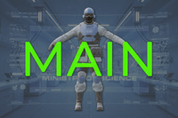 |
0% |
- |
- |
75 [1.5/秒] |
是 |
0%
|
| Head |
75 |
 轻型 轻型 |
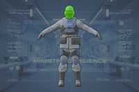
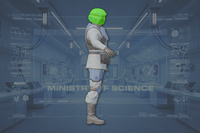
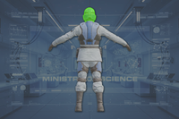
|
0% |
100% |
是 |
无 |
是 |
100%
|
| Torso |
200 |
轻型 |
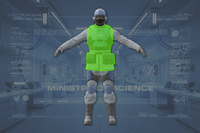
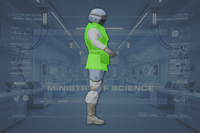
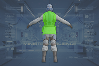
|
0% |
100% |
是 |
无 |
是 |
100%
|
| Arms (2) |
200 |
无护甲 |
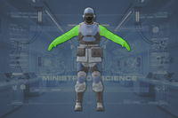
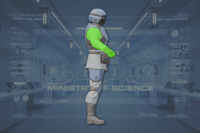
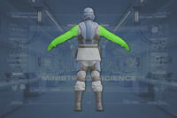
|
0% |
100% |
是 |
无 |
是 |
100%
|
| 腿部(2) |
300 |
无护甲 |
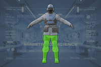
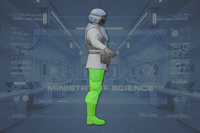
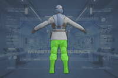
|
0% |
100% |
是 |
无 |
是 |
100%
|
Disclaimer: 每个带数量的高亮部位 a 数量有各自的 生命值. 未标注数量的部位共享 生命值 pools.
1) 生命值标注为 标注为 "主体" 没有各自的 individual 生命值. All 造成伤害 to these parts is 转移到敌人的 主生命值 pool.
2) 请参阅 护甲 values and enemy 耐久度 as defined in
伤害 for more information.
3) 造成伤害 to a part will also be 部分或全部转移 in full to 主生命值. 若设置为 0%, 否 伤害 is transferred.
4) 若设置为 "是", 伤害 transferred 对主血量 is capped by the combined 生命值 and 构造 of the part.
5) 构造 充当 a secondary 生命池 that, 一旦主体或肢体 生命值 has been depleted, 可能会衰减. The first number is the total 构造 and the second is the 衰退速率. 若设置为 0/s 不会衰减 and the 构造 作为额外 生命值.
6) 爆炸抗性 means 爆炸 伤害抗性, and can 射程 from 0 to 100%. 若设置为 100%, the limb cannot take 爆炸伤害; The 爆炸伤害 will instead 目标 主体. 请参阅
伤害 for more information.
- Note: This 机械师, known as Affected By 爆炸 can only occur once per 爆炸, 无论 100% 爆炸抗性 parts hit, and the 爆炸's 护甲穿透 must match or exceed 主体护甲 to deal 伤害 对主血量. However, 如果相同 爆炸 has already damaged 主体, this 机械师 will not trigger.
行为
- 超级地球武装部队士兵通常以5-7人的小队出现，常在……附近 平民们，在那里他们将积极战斗或搜寻敌对力量。
- 每个生成的超级地球武装部队士兵都会以绿色小点标记在绝地潜兵的小地图上。
- 在“……”期间，超级地球武装部队士兵也可以通过鹈鹕部署到绝地潜兵的位置重型 SEAF Presence”行星修正。
- 超级地球武装部队士兵装备各种武器，在战场上履行各自的职责：
- 超级地球武装部队小队队长 装备经过改装的 AR-23 解放者 突击步枪和 G-12 High 爆炸 手雷。他们右肩有肩垫，并携带大型无线电背包。头盔上有用于无线电通信和小队协调的麦克风延伸装置。
- 尽管视觉上装备了AR-23解放者，但它们发射的却是 AR-23P 解放者 Penetrator 弹药，使其能够接战
 中型 装甲目标。
中型 装甲目标。
- A Squad Leader will lead a squad of SEAF Infantry around the map. He does not possess any kind of 特殊能力, like coordinating the Squad to 找掩护 or focus 火焰.[1]
- 如果绝地潜兵命令小队队长跟随他们，该绝地潜兵将获得整支小队的控制权。
- 超级地球武装部队步枪兵 与小队长拥有相同的配装，但没有肩垫、大型无线电背包或头盔麦克风。偶尔可以看到他们背着背包。
- 一旦进入接战距离（通常35米内），超级地球武装部队步枪兵会用步枪攻击敌方目标，并偶尔投掷手雷。
- 这些手雷可能伤害绝地潜兵，因此建议注意它们何时何地被投掷。也可以通过它们发出的黄色闪光来识别。
- 超级地球武装部队专家 装备 MG-43 Machine Guns and an EAT-17 消耗性反坦克武器 发射器。他们是视觉上装甲最重的，胸甲上有肩垫、护腕、护胫和护颈。头盔保持标准配发。
- 一旦进入接战距离，超级地球武装部队专家会进入蹲姿，持续用机枪射击。
- 遇到高生命值或装甲目标时，他们会向这些目标发射消耗性反坦克发射器。
- 超级地球武装部队军医 装备 SMG-37 捍卫者 冲锋枪、 P-11 Stim Pistols and Stim们。这些士兵还可以通过盔甲上的条纹和装有医疗用品的红色背包来识别。他们的头盔很独特，两侧向前突出以覆盖脸颊。
- 如果任何超级地球武装部队士兵或绝地潜兵受伤，超级地球武装部队军医会尝试用治疗剂手枪远程治疗他们，或近距离注射治疗剂。
- 由超级地球武装部队军医施用的治疗剂，无论手动注射还是通过治疗剂手枪，都不会受绝地潜兵装备……的影响 试验性注射剂 强化资源.
- 随着更新 1.007.000 超级地球武装部队士兵的AI得到了改进。
- 超级地球武装部队士兵现在能够更可靠地摧毁敌方哨站、巢穴和营地。
- SEAF Soldiers will avoid Eagle 战略配备 thrown by the 绝地潜兵, attempting to run away from them. They will also avoid 火焰 on the ground. They are, however, still oblivious to 轨道武器 战略配备, Mines and 绝地潜兵 armed Hellbombs.
- 如果附近没有敌人，超级地球武装部队会开始向最近的任务目标位置或敌人所在地前进。如果所有目标都已完成或被摧毁，它们将转而前往撤离点。
- 每位绝地潜兵最多可以招募8名超级地球武装部队士兵，方法是在近距离使用通讯轮盘中的“跟我来”命令。超级地球武装部队士兵在超级城市地图上最多生成8个，当一名超级地球武装部队士兵死亡或卸载时会继续生成周期。
- 在带有“重型超级地球武装部队存在”修正的星球上，上限更高。3架鹈鹕穿梭机可以各自同时部署一支6人超级地球武装部队士兵小队，总共部署18名超级地球武装部队士兵，超过超级城市的上限。已遇到高达35人的群体。
- Using the Casual Salute or Lockstep 在它们附近使用表情，只要它们没有在积极战斗，就能达到同样的效果。它们也会以敬礼作为回应。
- 值得注意的是，超级地球武装部队士兵用左手敬礼，而绝地潜兵总是用右手敬礼。
- 被招募的超级地球武装部队士兵会持续跟随，直到绝地潜兵死亡、撤离，或使用通讯轮盘中的“等待”命令。使用两次“等待”命令会让他们解散，停止跟随你，重新自主行动。
- 跟随一名绝地潜兵的超级地球武装部队士兵仍可被另一名绝地潜兵招募，从而允许通过合作战术带领他们穿越战场。
- 超级地球武装部队士兵在诸如击倒重型单位或附近绝地潜兵死亡等事件时拥有特殊语音台词。
- 当超级地球武装部队士兵重伤时，他们会进入倒地状态，无法移动或战斗，直到使用治疗剂或P-11治疗剂手枪治疗。如果未及时治疗，他们会流血而死。
- 非战斗时，超级地球武装部队士兵可以以多种方式与绝地潜兵的表情互动并作出回应。
- 一些表情动作，例如 显示 of Brawn，可以赢得超级地球武装部队的欢呼。
- 超级地球武装部队士兵可以与该……互动 Hug 以及各种握手表情。
- the Scout Handshake 会使超级地球武装部队士兵要么沮丧地看着自己的手，要么做出好像在环视周围区域的手势。
- the High-Five 会使绝地潜兵把超级地球武装部队士兵拉过来顶头，导致士兵被撞得后退并抱头片刻。
- the 爆炸 Handshake 会使超级地球武装部队士兵模仿绝地潜兵的手势。
战术信息
- 超级地球武装部队士兵生成在 Mega Cities 以及带有重型超级地球武装部队存在修正的星球上。他们通过鹈鹕穿梭机部署。
- 在超级城市中，降落时现场就会有一支超级地球武装部队士兵小队，让绝地潜兵可以快速招募他们为己所用。
- In 撤离高价值资产 在超级城市中进行的任务中，任务开始时任务地点总是有一支超级地球武装部队士兵小队，随着任务推进，更多士兵会通过鹈鹕穿梭机部署。
- 从鹈鹕穿梭机部署的超级地球武装部队士兵遵循一般小队构成：1名小队队长、2名步枪兵、2名专家和1名军医。超级地球武装部队士兵会跟随他们的小队队长。
- Each SEAF 战士 killed by 正面 actions of a 绝地潜兵 immediately deducts
 25 申购点 Slips from the 当前 amount for the 任务. This includes Soldiers killed by automated 战略配备 例如 AX/AR-23 "Guard Dog" 和 A/G-16 加特林哨戒炮.
25 申购点 Slips from the 当前 amount for the 任务. This includes Soldiers killed by automated 战略配备 例如 AX/AR-23 "Guard Dog" 和 A/G-16 加特林哨戒炮.
- SEAF soldiers following the 绝地潜兵 属性 their kills to the 绝地潜兵. As such, any civilians or SEAF they kill detracts from the 绝地潜兵 leading them. This will not be represented in player death screen messages.
- If a 绝地潜兵 is caught 9 times recklessly killing SEAF Soldiers or Civilians, they will be branded as a 叛徒. As such, the 超级驱逐舰 will begin firing 380mm HE Shells at the 绝地潜兵 until they are killed. Mines will not add to the 叛徒 tally but will still deduct 申购点 Slips.
- the A/弧度-3 特斯拉塔 对其附近的超级地球武装部队士兵没有反应[2]。不过，如果电弧由其他人触发，它仍会杀死超级地球武装部队士兵。
Voice Lines
This 章节 is missing information about Voice lines and their triggers, see {{Voice Lines}} for more 信息..
Please expand the 章节 to include this information. Further 详情 may exist on the
talk page.
语音台词表
此列表并非详尽无遗！超级地球武装部队士兵可能还有更多台词。如果发现，请添加到这里！
| Trigger
|
Voice Line
|
Audio
|
| 空闲时 |
准备播撒民主！ |
|
| 尽显公民义务。 |
|
| 暴政永远不会得逞！ |
|
| 感受民主的温暖怀抱吧！ |
|
| 为了超级地球的荣耀。 |
|
| 最高指挥部回应了我们的请求！ |
|
| 空闲时和与绝地潜兵小队在一起时 |
给我们演示正确做法！ |
|
| 绝地潜兵来了！ |
|
| 绝地潜兵们！我们不能输！ |
|
| 真正的绝地潜兵！ |
|
| 绝地潜兵会带我们挺过去的！ |
|
| 先生，或者呃，女士，这是最大的荣幸。 |
|
| 呃——呃——我吗？我是说——你好，绝地潜兵。 |
|
| 你还想要更多？我还有的是！ |
|
| 没有什么能推翻我们的生活方式！ |
|
| 现在我们有机会了！ |
|
| 超级地球的力量！ |
|
| 民主的精英。 |
|
| 我们的请求得到了回应！ |
|
| 就像电影里一样…… |
|
| 很高兴你站在我们这边，绝地潜兵。 |
|
| 很高兴你在这里，绝地潜兵。 |
|
| 看来我们要主动出击了——欢迎你，绝地潜兵。 |
|
| 欢迎，绝地潜兵。很高兴你能加入我们。 |
|
| 欢迎登船，民主的使者们。 |
|
| 哇。没人会相信这件事。 |
|
| 哇！呃，你好，绝地潜兵。 |
|
| 绝地潜兵。自由万岁。 |
|
| 绝地潜兵击杀敌人时 |
看到了吗！精英中的精英！ |
|
| 看你干活真是享受，绝地潜兵！ |
|
| 被正义踩在脚下。活该。 |
|
| 自由圣母啊——看它们跑得多欢！ |
|
| 死掉的敌人。今天看到的最好的东西。 |
|
| 马上，好主意。 |
|
| 谢天谢地他们站在我们这边！ |
|
| 撕碎它们，绝地潜兵！ |
|
| 天哪，我真希望也能那样射击！ |
|
| 倒下的敌人——自由的燃料。 |
|
| 这就是他们是最棒的原因！ |
|
| 好枪法，绝地潜兵！ |
|
| 痛苦地安息吧，人渣。 |
|
| 你拿下它们了，绝地潜兵！ |
|
| 耶！！！杀光它们！！！ |
|
| 哇。完美。 |
|
| 战斗中 |
感谢超级地球派来绝地潜兵！ |
|
| 职责！忠诚！服从！ |
|
| 为正义之火添柴！ |
|
| 自由从不退缩！ |
|
| 呃——为了超级地球！ |
|
| 待在家里多好，垃圾！ |
|
| 我们的生活方式就是我们战斗的理由！ |
|
| 没人能夺走我的自由！ |
|
| 自由从不退缩！ |
|
| 我们决心的证明！ |
|
| 今天不行，怪胎们！ |
|
| 准备在他们脑袋上开一个解放之洞…… |
|
| 我们面对暴政的决心将导致他们的覆灭！ |
|
| 拿不走我的自由！自己去弄一个！ |
|
| 攻击民主，就要付出代价！ |
|
| 民主的力量！ |
|
| 把它们轰回老家去！呜！ |
|
| 民主护佑我们！ |
|
| 自由配正义，这就来！ |
|
| 自由！ |
|
| 守住阵线！ |
|
| 你想要我的自由？我的自由？！那得再加把劲！ |
|
| 管理式民主在行动！ |
|
| 记住士兵们：浪费敌人，别浪费子弹！ |
|
| 真希望能再杀他们一遍。 |
|
| 加入派对，伙计！我们给每个人都准备了一份子弹！ |
|
| 绝不后退！绝不投降！ |
|
| 是时候创造历史了。 |
|
| 它们活该！ |
|
| 对！向前推进！ |
|
| 接受再教育吧！ |
|
| 接受解放吧！ |
|
| 自由的代价！不用找零了！ |
|
| 那些增援在哪里？ |
|
| 维和行动的最佳典范！ |
|
| 准备照亮他们！ |
|
| 命中目标！命中目标！ |
|
| 对我来说这就是自由的味道。 |
|
| 命中目标，士兵们！ |
|
| 自由再次获胜。 |
|
| 暴政必亡！ |
|
| 肮脏的狂热分子！ |
|
| 它们想把我们逼出来！ |
|
| 等那些背弃旗帜的怪胎一进入射程…… |
|
| 一个接一个地夺回属于我们的东西！ |
|
| 滚回你们的老家去！ |
|
| 把你们所有的火力都招呼过去！ |
|
| 让每一发都命中！ |
|
| 接近敌人时 |
他们来了——早就该来了！ |
|
| 保持压力！ |
|
| 尝尝自由的滋味！ |
|
| 敌人正朝这边来！ |
|
| 提高警惕！ |
|
| 准备接敌！ |
|
| 发现敌人。准备接战。 |
|
| 怎么总有这么多？ |
|
| 来袭。选择你们的目标！ |
|
| 好像看到什么东西了！ |
|
| 接敌！接敌！！！ |
|
| 我们有伴了！！！ |
|
| 敌对目标在我视线内！ |
|
| 敌对目标，来袭！ |
|
| 拦住他们！ |
|
| 危险接近！ |
|
| 敌对目标！上膛待发，士兵们！ |
|
| 它们撑不了多久的，对吧？ |
|
| 敌对目标来袭！放马过来！ |
|
| 它们想把我们逼出来！ |
|
| 那是从哪来的！？ |
|
| 打起精神，士兵们！ |
|
| 接敌！待命！ |
|
| 盯上他们了！ |
|
| 嘿，下一个是谁？ |
|
| 武器就绪！ |
|
| 重新部署时 |
走吧！民主可不会自己送上门！ |
|
| 保持队形！让超级地球为你们骄傲！ |
|
| 改变路线——为了我们的事业更好。 |
|
| 改变路线？出什么问题了吗？ |
|
| 向前推进。城市需要我们的帮助。 |
|
| 别傻站着！走走走！ |
|
| 我们现在走这条路！ |
|
| 计划有变——这边走！ |
|
| 稳住！ |
|
| 注意侧翼！ |
|
| 加把劲！ |
|
| 改变路线！ |
|
| 动起来！ |
|
| 哎——走错方向了！ |
|
| 保持警觉！ |
|
| 移动中！ |
|
| 投掷手雷时 |
手雷！都靠过来，怪胎们！ |
|
| 手雷！退后！ |
|
| 小心手雷！ |
|
| 死吧，恐怖分子！ |
|
| 尝尝这个恐怖！ |
|
| 手雷出击！ |
|
| 装填时 |
正在装填！这里弹药快见底了！ |
|
| 快点……快点……！正在装填！ |
|
| 正在装填！掩护我的身后。 |
|
| 正在装填……一分钟就好！ |
|
| 正在装填！掩护我！ |
|
| 需要更多弹药！ |
|
| 弹药打光了！ |
|
| 打空了！ |
|
| 敬礼时 |
你鼓舞了士兵们，绝地潜兵。 |
|
| 为自由减负！ |
|
| 自由万岁！ |
|
| 为了正义！ |
|
| 跟随中 |
当然。愿自由指引我的手。 |
|
| 超级地球的精英！ |
|
| 我……我会感到荣幸。 |
|
| 这是我的荣幸。 |
|
| 永不放手。 |
|
| 立即执行！ |
|
| 看到超级地球武装部队士兵或平民死亡时 |
他们知道自己报名意味着什么。 |
|
| 他们尽了本分。现在轮到我们了。 |
|
| 又偷走了一票！ |
|
| 不！ |
|
| When seeing a 绝地潜兵 die |
我投票的时候，会想起你的，绝地潜兵。 |
|
| 像他们那样打完这场仗。 |
|
| 我见过最伟大的绝地潜兵。 |
|
| 绝地潜兵！？复仇！ |
|
| 针对各阵营的战斗对话 |
这是为了梅里迪亚！ |
|
| 这是为了溪谷！ |
|
| 被注射治疗剂时 |
谢谢你！ |
|
| 非常感谢！ |
|
| I owe you my life, 绝地潜兵. |
|
| 意外射中绝地潜兵时 |
对不起！我会去自首接受再教育！ |
|
| I shot a 绝地潜兵! I don't deserve forgiveness! |
|
| 与“击掌”表情互动时 |
别这样。好吧，来点也无妨。 |
|
| 你真棒，绝地潜兵！ |
|
| 与“拥抱”表情互动时 |
绝地潜兵？！我——哦。 |
|
| 我爱你们——超级地球，我爱超级地球。 |
|
| 别放手。 |
|
| 就像回到家一样。 |
|
| 原来这就是自由的味道…… |
|
| 过来吧，你这大块头的自由。 |
|
| 我知道我们没法一直这样，但…… |
|
| 民主的温暖怀抱！ |
|
| 谢谢，士气大增！ |
|
| 我配不上这份荣耀。 |
|
| 我们——我们现在是朋友了吗？ |
|
| 就像拥抱一个可动人偶。 |
|
| 超级地球的心跳同频共振。 |
|
| 我需要这个…… |
|
| 我需要这个。 |
|
| 别爱上我，好吗？ |
|
| 靠过来。 |
|
| 自由向我们微笑。 |
|
| 这感觉真好。应该成为规定动作。 |
|
| ……谢谢你，绝地潜兵。 |
|
| 我们就是这样赢的。团结一致。 |
|
| 我已经感觉更强了。 |
|
| 哇，现在我什么都敢挑战了。 |
|
| 哇，你好强…… |
|
| 哦，谢谢你。 |
|
| 难以置信. |
|
| 好吧，就这么发生了，真的发生了！ |
|
| You have 否 idea what this means to me. |
|
| Now that's what I call guns. |
|
| 与“热烈握手”表情互动时 |
没错——这就是超级地球的价值观！ |
|
1.007.000之前
A SEAF 战士 as seen in promotional imagery
A SEAF 战士 as seen in-game during the Battle for 超级地球
A SEAF 战士 as seen in-game. Equipped with a radio pack. Currently, this is purely 装饰 and serves 否 目的.
A SEAF 战士 equipped with an EAT-17 火箭发射器.
SEAF Soldiers saluting a 绝地潜兵 in the rain
Discovering two dead SEAF Soldiers in a bunker.
Render of a SEAF 战士 with an EAT-17
Render of a SEAF 战士 with a Radio Backpack
Render of SEAF 战士 with 解放者 步枪
1.007.000
SEAF 专家 unit in city coloration
SEAF Squad Leader in cold 环境 gear
SEAF Medic in cold 环境 gear
SEAF 步枪手, Squad Leader, and Medic in arid 天气 gear
Two SEAF Soldiers in forest gear
SEAF Squad Leader in forest gear
SEAF Medic in forest gear
Difference between forest gear for Medics and other SEAF units
琐事
- 随着……的发布 Devoid of Liberty，超级地球武装部队士兵既有原有的、也有新增的主武器和 MG-43 机枪获得了新的配色方案，标准变体采用与其盔甲相同的蓝白配色。出于某些原因，……的配色 EAT-17 消耗性反坦克武器超级地球武装部队士兵装备的……没有改变，仍然保持传统绝地潜兵的黑黄配色。
- 超级地球武装部队士兵的盔甲、制服和武器配色会随其部署环境而变化：[3]
- In Mega Cities 以及……内的星球 Void，超级地球武装部队单位装备其标准配色的浅蓝色盔甲和武器，以及白色制服。
- 在寒冷星球上，超级地球武装部队单位装备海军蓝盔甲、白色武器，以及蓝灰色迷彩制服。
- 在干旱星球上，超级地球武装部队单位装备棕褐色盔甲和武器，以及棕褐色迷彩制服。
- 在森林星球上，超级地球武装部队军医专门装备白色盔甲，而其他类型的士兵则使用暗绿色盔甲。所有单位都装备暗绿色武器，以及棕绿色迷彩制服。
- 据箭头发社区经理miitchimus称，超级地球武装部队军医的名字是斯蒂莫西（Stimmothy）。[4]
- 这个名字是在玩“……Stim”以及蒂莫西这个名字。
- 绝地潜兵2的Xbox新闻帖分享了另外三名超级地球武装部队士兵的名字。[5]
- 小队队长——C.张
- 步枪兵——A.阿伦森
- 专家——B.德沃
- 社区通常用两个“昵称”称呼超级地球武装部队士兵：SEAFie和蓝莓，后者指他们的蓝色配色。
变更历史
Chages
- 超级地球 武装力量 (SEAF) can now appear as a 行星 修正, joining you in battle in your missions and enhancing your combat capabilities with a 射程 of new tools (Stim pistols, 重型 Machine Guns and more)
修复
未记录变更
- 主体生命值从200降低至150
- 构造 已增加 from 10 to 75
- 构造 衰退速率 已减少 from 2/s to 1.5/s
参考
 The 光能者
The 光能者 超级地球 联邦